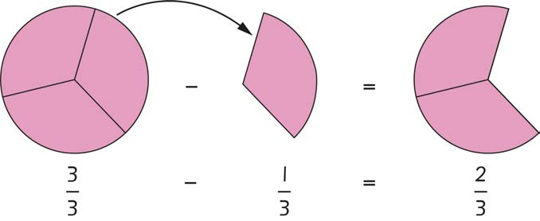

Hatua
1.
Chora duara na gawanya duara hilo katika vipande vitatu vilivyo sawa.
2.
Tia kivuli vipande vitatu kwenye duara hilo na andika sehemu iliyotiwa kivuli kwa numerali.
3.
Ondoa kipande kimoja ulichotia kivuli katika hatua ya pili. Andika sehemu ya kipande hicho kwa numerali.
4.
Chora tena kuonesha sehemu ya duara iliyobaki katika hatua ya tatu baada ya kuondoa kipande kimoja.
5.
Andika sehemu iliyobaki katika hatua ya nne kwa numerali.
Hatua za awali zinaweza kuoneshwa kama ifuatavyo:

Kutoa sehemu zenye asili moja. Toa kiasi kama unavyotoa namba za kawaida.
Asili haibadiliki kwa kuwa sehemu zinaunda kitu kimoja.
Hivyo:
Kwa hiyo,